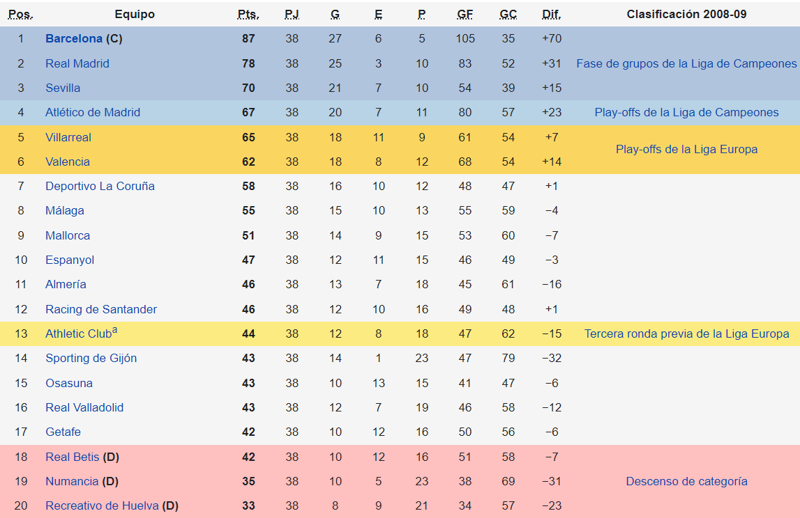

La temporada 2008-09 es la 109.ª desde la fundación de la entidad y la 78.ª consecutiva del club en la Liga. En esta temporada Pep Guardiola se estrena como entrenador del Fútbol Club Barcelona. Su primer año como entrenador, consiguió ascender de categoría al Barcelona B. La directiva del club se fijó en él para sustituir a Frank Rijkaard, hecho que se produce en junio de 2008, tras los malos resultados de la temporada 2007/08. Pep Guardiola inició de este modo su etapa como entrenador del primer equipo del Barcelona, la cual no pudo ser más exitosa, ya que consiguió ganar el Triplete (Liga, Copa y Liga de Campeones), hazaña que ningún club español había logrado antes en la historia del fútbol y convirtiéndose en el 5.º equipo europeo en lograrlo (PSV Eindhoven, Manchester United, Ajax Ámsterdam y el Celtic fueron los únicos equipos europeos en lograrlo hasta ese momento).
En julio de 2008, tras una temporada muy decepcionante, el F. C. Barcelona empezó la preparación para su próxima temporada contratando como técnico al exfutbolista Pep Guardiola, que había completado unas notables campañas en el Barça B. Intentando cambiar las tornas, fichó al brasileño Daniel Alves, por 29,5 millones. También el Barça se hizo con el uruguayo Martín Cáceres, con Aliaksandr Hleb y con el malí y ex del Sevilla, Seydou Keita. El técnico catalán desguazó el anterior ciclo anunciando que prescindía de Ronaldinho, Deco y Eto’o (aunque el camerunés le logró convencer para quedarse) y dio la camiseta con el número 10 a Lionel Messi, quien, encumbrado con el oro olímpico de Pekín, sería el buque insignia del nuevo proyecto. El Real Madrid por su parte se hizo con los servicios de Lassana Diarra, y los holandeses Klaas-Jan Huntelaar y Rafael van der Vaart para seguir con los éxitos tras dos triunfos consecutivos en Liga e intentar obtener otros títulos, entre ellas la ansiada décima Copa de Europa.
El FC Barcelona se proclamó campeón de invierno tras finalizar la primera vuelta con doce puntos más que el Real Madrid y el Sevilla F. C.. A más puntos aún quedaban Valencia, Villarreal y Atlético de Madrid. Por el contrario, Osasuna —que no conoció la victoria hasta la jornada trece—, RCD Mallorca y RCD Espanyol ocupaban los puestos de descenso. El F. C. Barcelona no dio muestras de flaqueza en la segunda vuelta, aunque es verdad que se dejó algunos puntos, como la derrota en el Calderón (4-3), acercándosele peligrosamente el Madrid, que encauzó varias victorias consecutivas. Al término de la jornada 33, el Madrid se colocó a 4 puntos tras golear en Sevilla (2-4), pero en el Clásico, donde podía colocarse a un punto, los catalanes tomaron el estadio blanco venciendo con contundencia y buen juego por 2-6.
La Liga de Campeones de la UEFA 2008-09 fue la 54.ª edición en la historia de la competición. Se disputó entre julio de 2008 y mayo de 2009. En la final, disputada en el Estadio Olímpico de Roma, el Barcelona derrotó por 2-0 al Manchester United, el vigente campeón, logrando su tercer título europeo. El conjunto español empezó su participación desde la tercera fase de las Rondas Previas. El Anorthosis Famagusta de Chipre y el BATE Borisov de Bielorrusia fueron los primeros equipos de sus respectivos países en clasificar a la fase de grupos. El rumano CFR Cluj y el campeón ruso Zenit San Petersburgo también hicieron su debut en la Champions.
La fase del grupos para el barça quedo de la siguiente manera:

El recorrido en Champions fue el siguiente, donde el FC Barcelona consiguio su tercera Champions.